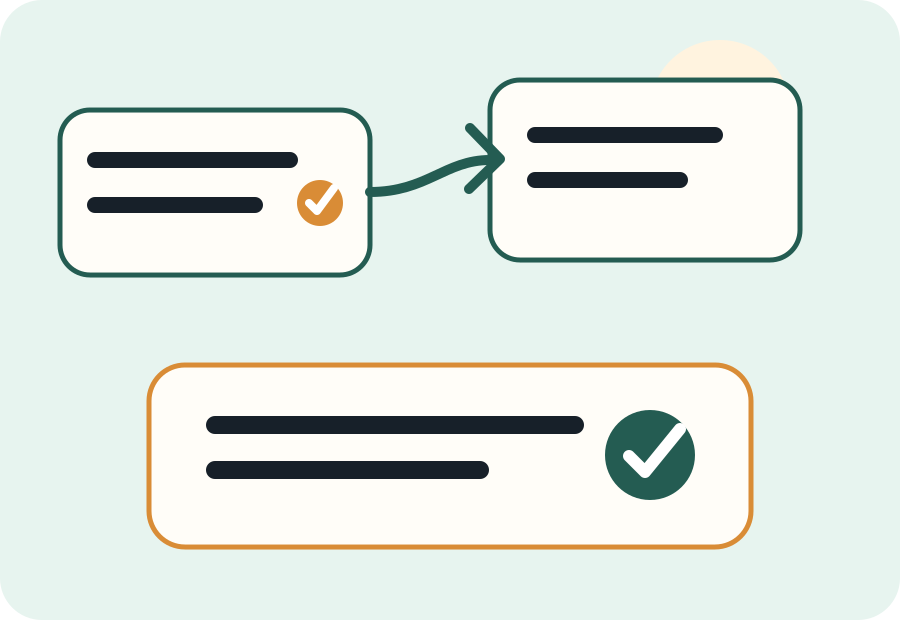

Answer 8 planning questions
Check every statement that applies. The helper will suggest a conservative research path and a list of questions to bring forward.

Suggested research path
Check any boxes above to see a conservative starting point.
How to use the result
The safest use of this tool is to treat the result as a planning conversation starter. A high-complexity result does not mean something is wrong. It simply means there are enough moving parts that a tailored review may be worth prioritizing.
Monetized resource placeholders
Disclosure: These are placeholders. If replaced with real affiliate links, Will Checklist may earn a commission. Do not add rankings or claims unless you can support them.
FAQ
Does this tool tell me which will-making option to use?
No. It organizes general risk factors so you can decide what to research and what to ask a licensed professional.
Can I rely on a low-complexity result?
No result is a legal conclusion. State rules and personal facts matter, so use the result as a preparation aid only.
Why does the helper ask about conflict and minors?
Those issues often make estate planning more sensitive and may justify a professional conversation.
Ready to organize the details?
Use the checklist tool next so your research path is backed by a real planning packet.